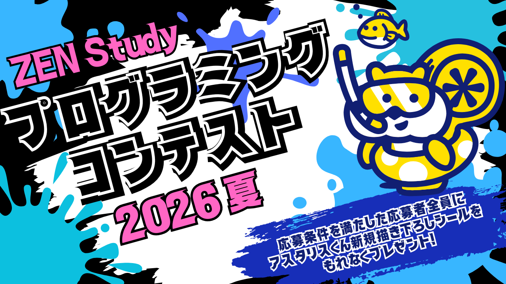
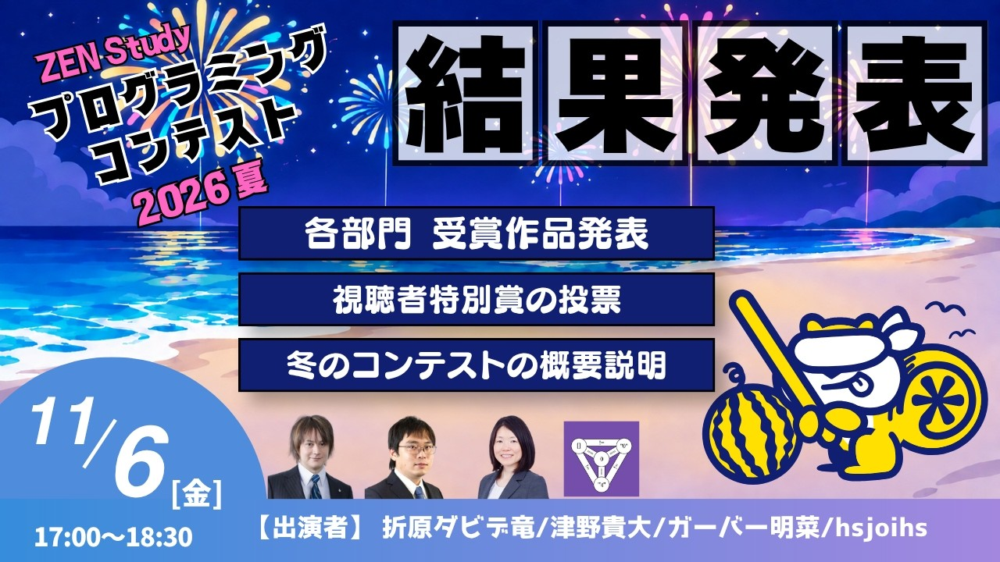
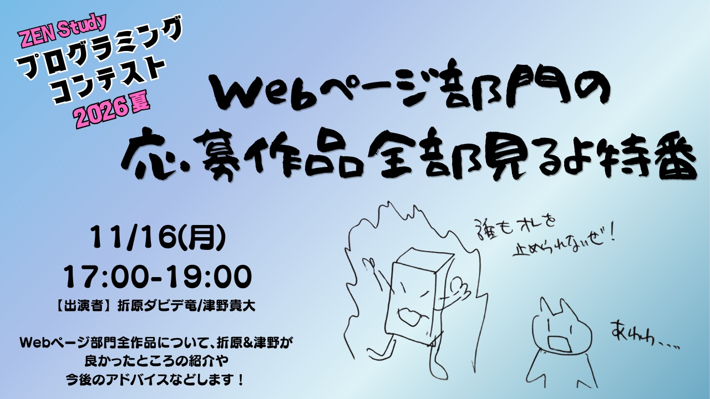
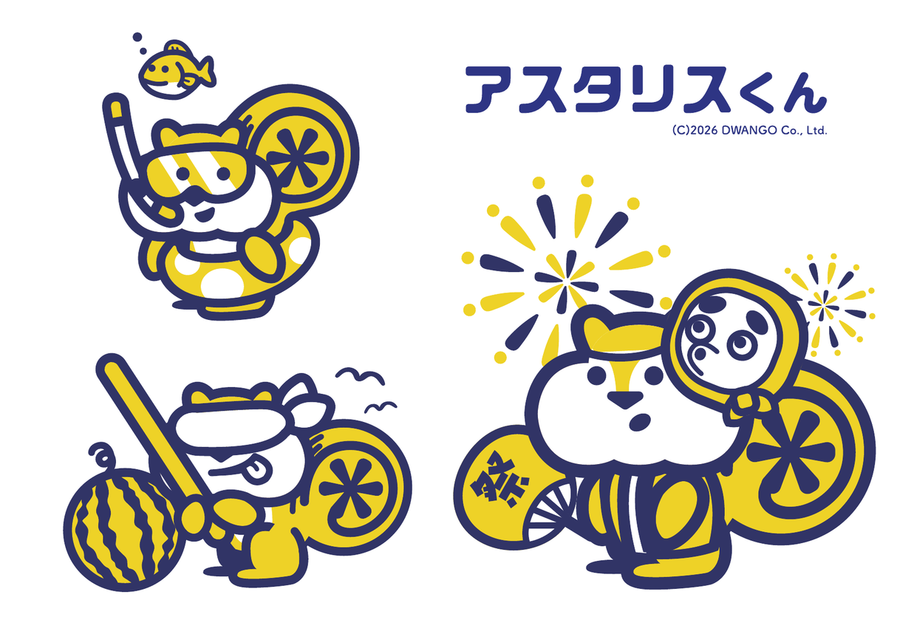
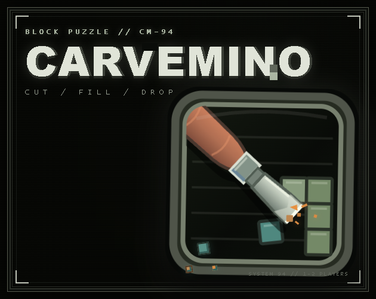
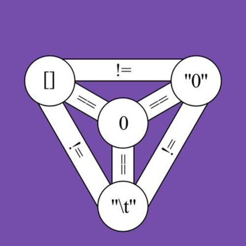
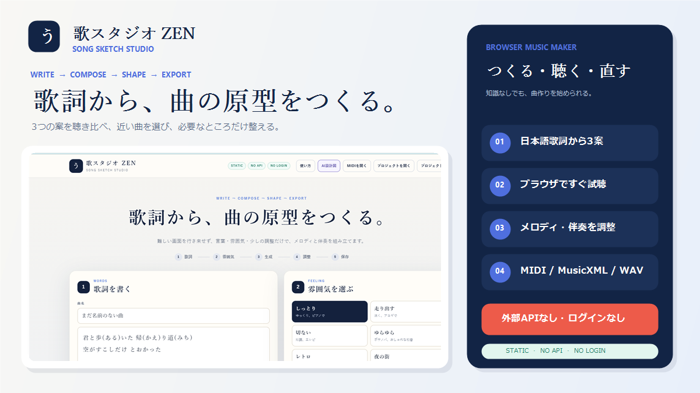
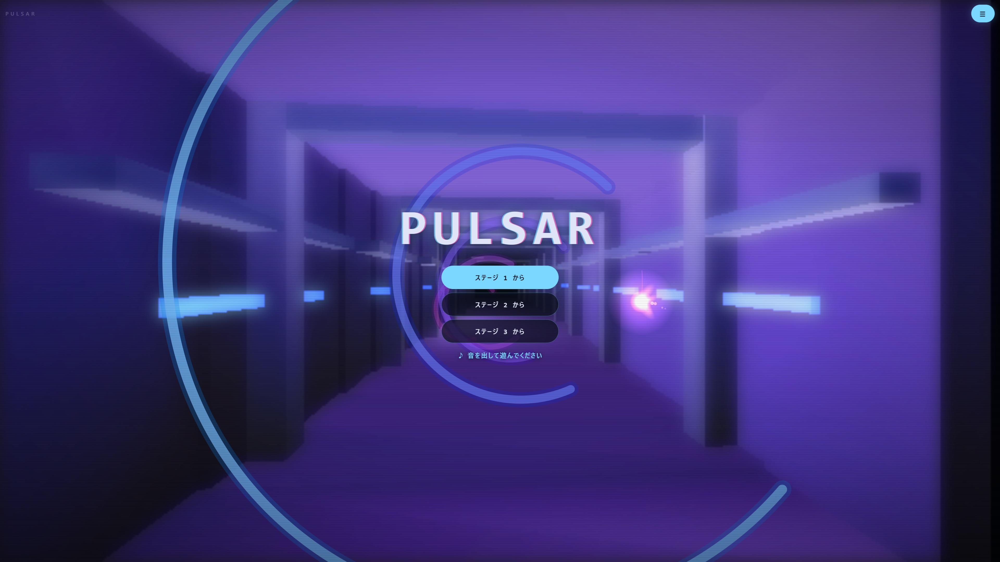

ZEN Study
プログラミングコンテスト
2026 夏結果発表

「ZEN Study プログラミングコンテスト 2026 夏」へ、たくさんの作品をご応募いただきありがとうございました。
11月6日(金)の結果発表特番で発表した、各賞の受賞作品をご紹介します。受賞された皆様、おめでとうございます！
結果発表特番
11月6日(金) 17時より、結果発表特番を生放送しました。
現在アーカイブ配信をしておりますので、見逃してしまった方もぜひご覧ください！

- 放送日時
- 2026年11月6日(金)
17:00〜18:30 - 出演
- 折原ダビデ竜・津野貴大・
ガーバー明菜・hsjoihs
Webページ部門の応募作品全部見るよ特番
11月16日(月) 17時より、Webページ部門の応募作品を紹介する特番を生放送します。
作品の良かったところや、今後の作品づくりに向けたアドバイスをお届けします。

- 放送日時
- 2026年11月16日(月)
17:00〜19:00 - 出演
- 折原ダビデ竜・津野貴大
参加記念品について

アスタリスくん
新規描き下ろしシール （非売品）
今回はすべての応募作品が応募規程を満たしていたため、参加者全員に贈呈いたします！
Webページ部門
ZEN大学生
最優秀賞
1作品
優秀賞
2作品
健闘賞
21作品
受賞作品の一覧を見る一覧を閉じる
-
職務経歴書 作成ツール
-
俳句遊戯集
-
昭和のおやじギャグ パートⅡ
-
cell-sphere-game
-
夏の絵日記メーカー
-
ビビデダビデQuiz
-
ジレンマみたいな
-
元号パズル
-
ロードモポ - 無意味な徒労から人類を解放するカウントダウン
-
(ヾﾉ･∀･`)ﾅｲﾅｲ映画
-
語呂合わせ当てゲーム
-
おすすめ履修診断
-
Quiz Pal～解いて、訊いて、わかる～
-
CHRONOS PROTOCOL
-
sawsaw-suka
-
ラッキージャック
-
ありがとうの花
-
寺子屋ポータル
-
ZEN PK GAME
-
哲学者、誰やねん。
-
思考の芽
N高グループ生
最優秀賞
1作品
優秀賞
2作品
のびしろ∞で賞
3作品
健闘賞
4作品
Scratch部門
最優秀賞
1作品
優秀賞
2作品
Unity部門
最優秀賞
1作品
優秀賞
3作品
健闘賞
5作品
受賞作品の一覧を見る一覧を閉じる
審査員特別賞
5作品
戀塚賞
戀塚 昭彦
教材総監修

ガーバー賞
ガーバー明菜
プログラミング講師

はすじょい賞
佐藤 弘崇（hsjoihs）
プログラミング講師

折原賞
折原 ダビデ竜
教材責任者
津野賞
津野 貴大
プログラミング講師

視聴者の投票で選出
視聴者特別賞 2作品
結果発表特番の投票で2作品が奇跡的に同率首位となったため、2作品とも視聴者特別賞にしました！